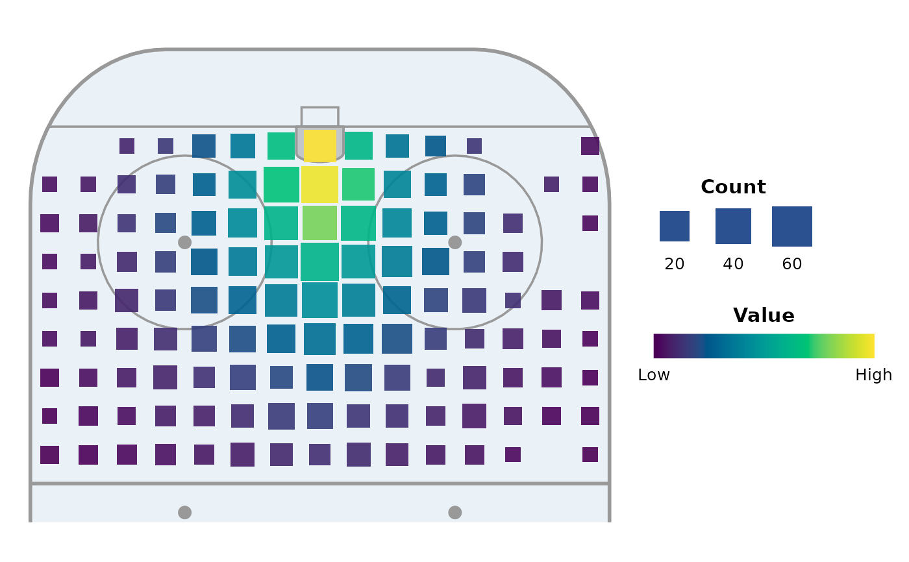
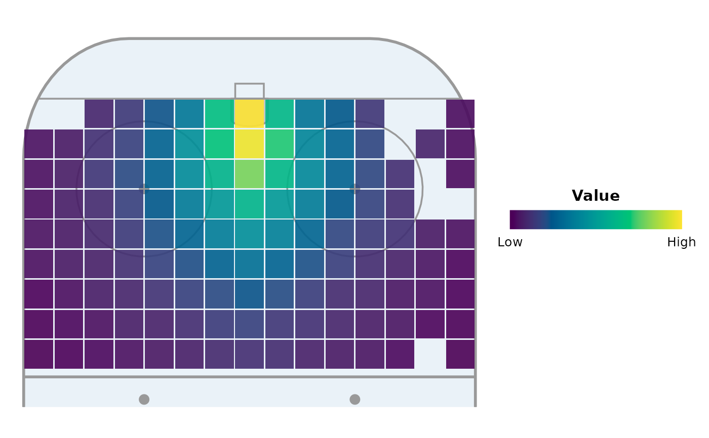
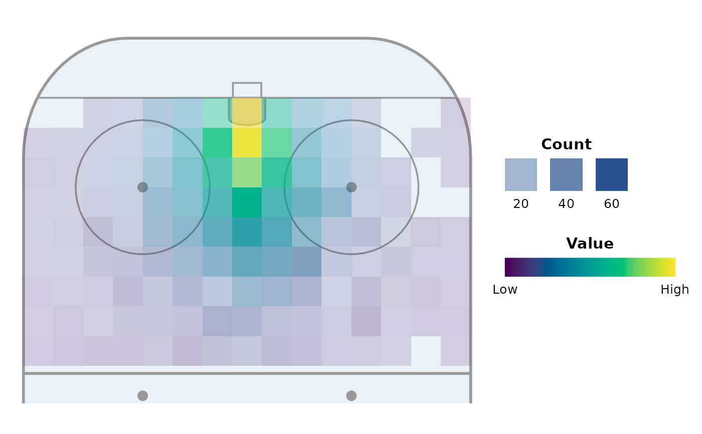
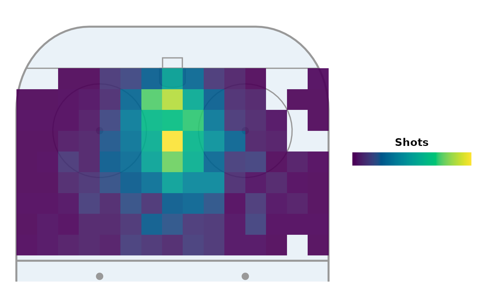

Bins events into a square grid and draws one square per cell, coloured by
the mean of the z aesthetic (e.g. expected goals, or any per-event value).
Squares are drawn in rink units and never exceed binwidth, so they
tile the grid without overlapping and look identical at any export size.
Add it to a rink from annotate_rink(); facet it however you like.
Usage
geom_rink_bin(
mapping = NULL,
data = NULL,
position = "identity",
...,
style = c("size", "fill", "alpha"),
binwidth = 2.5,
gap = 0,
alpha = NULL,
dimensions = IIHF,
xlim = NULL,
ylim = NULL,
precomputed = FALSE,
scales = TRUE,
diverging = FALSE,
colour = NA,
linewidth = 0,
na.rm = FALSE,
show.legend = NA,
inherit.aes = TRUE
)Arguments
- mapping
Aesthetic mapping, usually
aes(x, y, z)(often set on theggplot()call), wherezis averaged within each cell.fill,sizeandalphaare supplied bystyle; anything you map here overrides them. Withprecomputed = TRUE, the data needsvalueandncolumns (as returned byrink_bin()).- data, position, na.rm, show.legend, inherit.aes
Standard ggplot2 layer arguments.
- ...
Other arguments passed to
ggplot2::layer().- style
One of
"size","fill"or"alpha"(see Details).- binwidth
Cell size, in rink units. Also the largest square side.
- gap
For
"fill"and"alpha", the gap between squares in rink units (the square side isbinwidth - gap).- alpha
Constant square alpha for
"size"and"fill"(default0.9). Ignored for"alpha", where alpha is mapped.- dimensions
Rink dimensions (e.g. IIHF, NHL) that set the binning bounds, so events on or behind the boards snap into the last in-rink cell. Pass the rink you are drawing, or
NULLto bin without bounds. Ignored for any ofxlim/ylimgiven, and whenprecomputed = TRUE.- xlim, ylim
Optional binning bounds in rink coordinates.
- precomputed
If
TRUE, skip binning and draw the cells as supplied, e.g. values you derived yourself fromrink_bin().- scales
If
TRUE(default), also return the matching scales forstyle:scale_fill_rink()(orscale_fill_rink_diverging()withdiverging = TRUE) plusscale_size_rink()for"size"orscale_alpha_rink()for"alpha". SetFALSEto add your own.- diverging
Use the diverging fill scale, for maps of differences centred on 0 (e.g. a player minus league average).
- colour, linewidth
Square border colour and width. The default draws no border; use e.g.
colour = "white", linewidth = 0.3for gridlines.
Details
Three ready-made styles cover the common maps; pick one with style:
"size"Square size encodes the event count (area proportional to frequency), fill the mean value.
"fill"Constant-size squares that fill the cell (leave a
gapfor thin gridlines); fill encodes the mean value."alpha"Constant-size squares whose alpha encodes the event count and fill the mean value.
Without a z aesthetic there is no value to average; map fill to
after_stat(count) for a pure frequency map (see examples).
Examples
library(ggplot2)
base <- ggplot(shots, aes(x, y, z = xg)) +
annotate_rink(orientation = "vertical", zones = "oz",
colour = "grey60", linewidth = 0.5)
base + geom_rink_bin(style = "size", binwidth = 2)

base + geom_rink_bin(style = "fill", binwidth = 2, gap = 0.1)

base + geom_rink_bin(style = "alpha", binwidth = 2)

# Frequency only: fill by count, your own scale
base +
geom_rink_bin(aes(fill = after_stat(count)), style = "fill",
binwidth = 2, scales = FALSE) +
scale_fill_rink(name = "Shots", labels = NULL)
